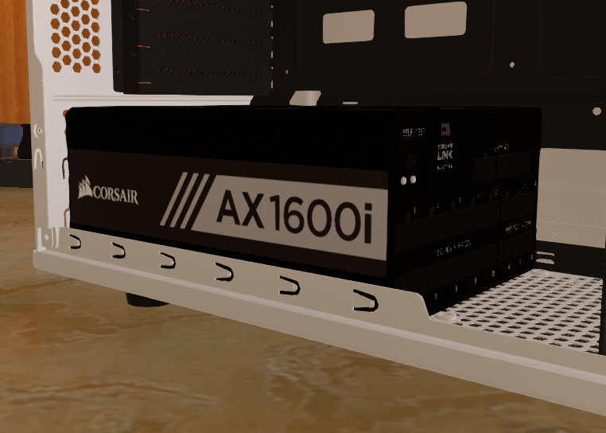

Le bloc d’alimentation, ou simplement l'alimentation, d'un PC est le matériel informatique l'alimentant.
L’alimentation est chargée de convertir la tension électrique du secteur en différentes tensions continues TBT,
compatibles avec les circuits électroniques de l’ordinateur.
L’alimentation fournit du courant électrique à l’ensemble des composants de l’ordinateur. Le bloc d’alimentation doit posséder une puissance suffisante pour alimenter les différents périphériques de ce dernier.
Elle convertit la tension alternative de 230 V en diverses tensions continues utilisées par la carte mère et les périphériques (disque dur, lecteur CD, …).
| Source | *Image provenant du jeu "PC Building Simulator". |